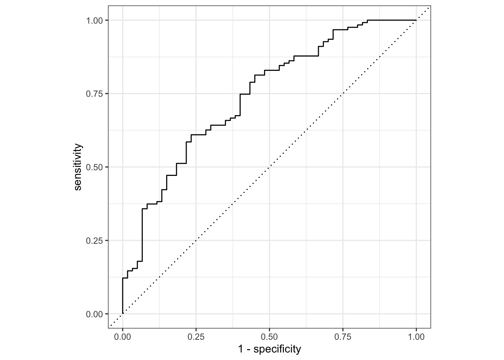
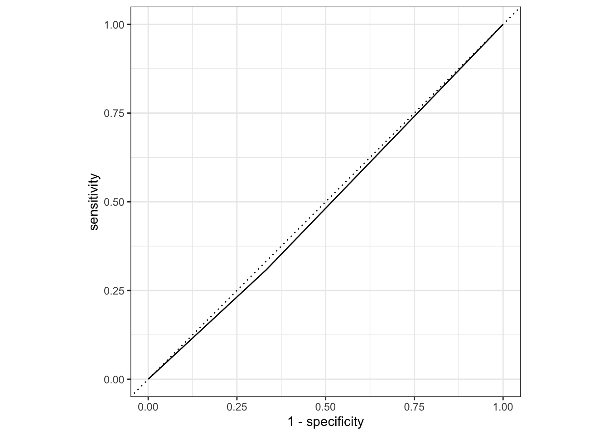

library(here)
library(tidyverse)
library(tidymodels)
library(performance)
library(dplyr)
library(skimr)Model Evaluation
Loading necessary packages
Loading previously processed data
#Path to data.
data_location <- here::here("fluanalysis", "data", "cleaned_data.rds")
#load data
mydata <- readRDS(data_location)Data splitting
- Here, we are splitting our data into two subsets. 3/4 for the training and 1/4 for test.
# To maintain reproducible results when re-done.
set.seed(1234)
# Proceeding with 75% for training and 25% for test data
split <- initial_split(mydata, prop = 3/4)Dataframe for the training and test data
train_data <- training(split)
test_data <- testing(split)- Training data set now contains 547 observations while test data contains 183.
Workflow creation and model fitting
FULL MODEL: Creating recipe that fits a logistic model with nausea as the outcome and all the predictors in the data
# Outcome is nausea. The rest of variables are all predictors
# Recipe #1: Nausea predicted by all variables
flu_mod10_rec <- recipe(Nausea ~ ., data = train_data)
# Model: logistic regression using GLM engine
flu_mod10_mod <- logistic_reg() %>%
set_engine("glm")
# Workflow: Pairing model and recipe
flu_mod10_workflow <- workflow() %>%
add_model(flu_mod10_mod) %>%
add_recipe(flu_mod10_rec)
# Pring workflow
flu_mod10_workflow══ Workflow ════════════════════════════════════════════════════════════════════
Preprocessor: Recipe
Model: logistic_reg()
── Preprocessor ────────────────────────────────────────────────────────────────
0 Recipe Steps
── Model ───────────────────────────────────────────────────────────────────────
Logistic Regression Model Specification (classification)
Computational engine: glm # Fitting the model to a training dataset
flu_mod10_fit <-
flu_mod10_workflow %>%
fit(data = train_data)
# Looking at the model output
flu_mod10_fit %>%
extract_fit_parsnip() %>%
tidy()# A tibble: 38 × 5
term estimate std.error statistic p.value
<chr> <dbl> <dbl> <dbl> <dbl>
1 (Intercept) -4.01 8.97 -0.447 0.655
2 SwollenLymphNodesYes -0.400 0.229 -1.75 0.0802
3 ChestCongestionYes 0.187 0.247 0.755 0.450
4 ChillsSweatsYes 0.343 0.328 1.05 0.296
5 NasalCongestionYes 0.384 0.290 1.32 0.185
6 CoughYNYes -0.256 0.590 -0.434 0.664
7 SneezeYes 0.0384 0.246 0.156 0.876
8 FatigueYes 0.148 0.448 0.331 0.741
9 SubjectiveFeverYes 0.185 0.257 0.719 0.472
10 HeadacheYes 0.571 0.351 1.63 0.104
# … with 28 more rowsFULL MODEL: USING trained workflow to predict unseen test data
# Using the trained workflow (flu_mod10_fit) to predict with the unseen test data
predict(flu_mod10_fit, test_data)# A tibble: 183 × 1
.pred_class
<fct>
1 Yes
2 No
3 No
4 No
5 No
6 No
7 No
8 No
9 No
10 No
# … with 173 more rows# Using argument() with the model plus test data for saving them together
flu_mod10_aug <-
augment(flu_mod10_fit, test_data)
flu_mod10_aug %>%
select(Nausea, .pred_No, .pred_Yes)# A tibble: 183 × 3
Nausea .pred_No .pred_Yes
<fct> <dbl> <dbl>
1 Yes 0.103 0.897
2 Yes 0.819 0.181
3 Yes 0.519 0.481
4 No 0.557 0.443
5 Yes 0.668 0.332
6 Yes 0.555 0.445
7 No 0.792 0.208
8 Yes 0.594 0.406
9 No 0.848 0.152
10 No 0.708 0.292
# … with 173 more rows# Plotting ROC curve
flu_mod10_aug %>%
roc_curve(truth = Nausea, .pred_No) %>%
autoplot()
# Using roc_auc() to get the estimates
flu_mod10_aug %>%
roc_auc(truth = Nausea, .pred_No)# A tibble: 1 × 3
.metric .estimator .estimate
<chr> <chr> <dbl>
1 roc_auc binary 0.740ALTERNATIVE MODEL: Outcome is still nausea and predictor is runnynose
# Using Nausea as a categorical outcome of interest and RunnyNose as main predictor
flu_mod10_rec2 <- recipe(Nausea ~ RunnyNose, data = train_data)
# Fitting the logistic model
flu_mod10_mod2 <- logistic_reg() %>%
set_engine("glm")
# Modelling workflow for pairing model and recipe
flu_mod10_workflow2 <- workflow() %>%
add_model(flu_mod10_mod2) %>%
add_recipe(flu_mod10_rec2)
flu_mod10_workflow2══ Workflow ════════════════════════════════════════════════════════════════════
Preprocessor: Recipe
Model: logistic_reg()
── Preprocessor ────────────────────────────────────────────────────────────────
0 Recipe Steps
── Model ───────────────────────────────────────────────────────────────────────
Logistic Regression Model Specification (classification)
Computational engine: glm # Using the resulting predictors for preparing recipe and training the model
flu_mod10_fit2 <-
flu_mod10_workflow2 %>%
fit(data = train_data)
# Pulling the fitted model object and using tidy() function for getting a tidy tibble of model coefficients
flu_mod10_fit2 %>%
extract_fit_parsnip() %>%
tidy()# A tibble: 2 × 5
term estimate std.error statistic p.value
<chr> <dbl> <dbl> <dbl> <dbl>
1 (Intercept) -0.664 0.171 -3.89 0.000100
2 RunnyNoseYes 0.101 0.200 0.506 0.613 ALTERNATIVE MODEL: USING TRAINED WORKFLOW TO PREDICT
# Using the trained data to predict with the unseen test data
predict(flu_mod10_fit2, test_data)# A tibble: 183 × 1
.pred_class
<fct>
1 No
2 No
3 No
4 No
5 No
6 No
7 No
8 No
9 No
10 No
# … with 173 more rows# Using argument() with the model plus test data for saving them together
flu_mod10_aug2 <-
augment(flu_mod10_fit2, test_data)
flu_mod10_aug2 %>%
select(Nausea, .pred_No, .pred_Yes)# A tibble: 183 × 3
Nausea .pred_No .pred_Yes
<fct> <dbl> <dbl>
1 Yes 0.637 0.363
2 Yes 0.660 0.340
3 Yes 0.660 0.340
4 No 0.637 0.363
5 Yes 0.637 0.363
6 Yes 0.637 0.363
7 No 0.660 0.340
8 Yes 0.637 0.363
9 No 0.660 0.340
10 No 0.637 0.363
# … with 173 more rows# Creating ROC curve and piping to the autoplot() method
flu_mod10_aug2 %>%
roc_curve(truth = Nausea, .pred_No) %>%
autoplot()
# Estimating the area under the curve
flu_mod10_aug2 %>%
roc_auc(truth = Nausea, .pred_No)# A tibble: 1 × 3
.metric .estimator .estimate
<chr> <chr> <dbl>
1 roc_auc binary 0.488Given this result, the full model using all variables as predictors perform better the reduced model with only RunnyNose as predictor. The full model as a ROC-AUC of 0.71 compared the reduced model with ROC-AUC of 0.46
This section is added by ABBIE KLINKER
Continuous + Everything
Recipe for a regression model to our categorical outcome of interest (BodyTemp)
cont_recipe1 <-
recipe(BodyTemp ~ ., data = train_data) Fit a Model with Workflow
cont_model1 <-
linear_reg() %>%
set_engine("lm")
cont1_wflow <-
workflow() %>%
add_model(cont_model1) %>%
add_recipe(cont_recipe1)
cont1_fit <-
cont1_wflow %>%
fit(data = train_data)
cont1_fit %>%
extract_fit_parsnip() %>%
tidy()# A tibble: 38 × 5
term estimate std.error statistic p.value
<chr> <dbl> <dbl> <dbl> <dbl>
1 (Intercept) 97.5 0.382 255. 0
2 SwollenLymphNodesYes -0.289 0.108 -2.67 0.00781
3 ChestCongestionYes 0.135 0.115 1.18 0.239
4 ChillsSweatsYes 0.199 0.148 1.34 0.179
5 NasalCongestionYes -0.199 0.130 -1.53 0.127
6 CoughYNYes 0.328 0.273 1.20 0.230
7 SneezeYes -0.335 0.115 -2.91 0.00377
8 FatigueYes 0.267 0.197 1.36 0.176
9 SubjectiveFeverYes 0.458 0.121 3.77 0.000180
10 HeadacheYes -0.0328 0.151 -0.217 0.828
# … with 28 more rowsCheck with testing data
predict(cont1_fit, test_data)Warning in predict.lm(object = object$fit, newdata = new_data, type =
"response"): prediction from a rank-deficient fit may be misleading# A tibble: 183 × 1
.pred
<dbl>
1 98.7
2 99.0
3 99.1
4 98.6
5 98.7
6 98.7
7 99.1
8 98.9
9 99.2
10 99.1
# … with 173 more rowscont1_aug <-
augment(cont1_fit, test_data)Warning in predict.lm(object = object$fit, newdata = new_data, type =
"response"): prediction from a rank-deficient fit may be misleadingcont1_aug# A tibble: 183 × 33
SwollenLymph…¹ Chest…² Chill…³ Nasal…⁴ CoughYN Sneeze Fatigue Subje…⁵ Heada…⁶
<fct> <fct> <fct> <fct> <fct> <fct> <fct> <fct> <fct>
1 Yes Yes Yes Yes No Yes Yes Yes Yes
2 Yes No Yes No No No Yes Yes Yes
3 No No Yes No Yes Yes Yes Yes Yes
4 No Yes Yes Yes Yes Yes Yes Yes Yes
5 Yes Yes Yes Yes Yes No Yes Yes Yes
6 No Yes Yes Yes Yes Yes Yes Yes Yes
7 No No Yes No Yes No Yes Yes Yes
8 Yes Yes Yes Yes Yes Yes Yes Yes Yes
9 No Yes No No Yes Yes Yes No Yes
10 Yes Yes Yes Yes Yes Yes Yes Yes Yes
# … with 173 more rows, 24 more variables: Weakness <fct>, WeaknessYN <fct>,
# CoughIntensity <fct>, CoughYN2 <fct>, Myalgia <fct>, MyalgiaYN <fct>,
# RunnyNose <fct>, AbPain <fct>, ChestPain <fct>, Diarrhea <fct>,
# EyePn <fct>, Insomnia <fct>, ItchyEye <fct>, Nausea <fct>, EarPn <fct>,
# Hearing <fct>, Pharyngitis <fct>, Breathless <fct>, ToothPn <fct>,
# Vision <fct>, Vomit <fct>, Wheeze <fct>, BodyTemp <dbl>, .pred <dbl>, and
# abbreviated variable names ¹SwollenLymphNodes, ²ChestCongestion, …RMSE
Training Data
cont1_train <-
augment(cont1_fit, train_data)Warning in predict.lm(object = object$fit, newdata = new_data, type =
"response"): prediction from a rank-deficient fit may be misleadingyardstick::rmse(cont1_train, BodyTemp, .pred)# A tibble: 1 × 3
.metric .estimator .estimate
<chr> <chr> <dbl>
1 rmse standard 1.12Testing Data
yardstick::rmse(cont1_aug, BodyTemp, .pred)# A tibble: 1 × 3
.metric .estimator .estimate
<chr> <chr> <dbl>
1 rmse standard 1.15We see that the training data performed a bit better with our RMSE estimated to be 1.12 versus with the tested data at 1.15, but both are within 0.03 of one another, which is not a bad amount. woo
Continuous + Main Predictor (RunnyNose)
Recipe for a logistic model to our categorical outcome of interest (Nausea)
cont_recipe2 <-
recipe(BodyTemp ~ RunnyNose, data = train_data) Fit a Model with Workflow
cont_model2 <-
linear_reg() %>%
set_engine("lm")
cont2_wflow <-
workflow() %>%
add_model(cont_model2) %>%
add_recipe(cont_recipe2)
cont2_fit <-
cont2_wflow %>%
fit(data = train_data)
cont2_fit %>%
extract_fit_parsnip() %>%
tidy()# A tibble: 2 × 5
term estimate std.error statistic p.value
<chr> <dbl> <dbl> <dbl> <dbl>
1 (Intercept) 99.1 0.0978 1014. 0
2 RunnyNoseYes -0.229 0.115 -1.98 0.0477RMSE
Testing Data
Check model with testing data
predict(cont2_fit, test_data)# A tibble: 183 × 1
.pred
<dbl>
1 98.9
2 99.1
3 99.1
4 98.9
5 98.9
6 98.9
7 99.1
8 98.9
9 99.1
10 98.9
# … with 173 more rowscont2_aug <-
augment(cont2_fit, test_data)
cont2_aug# A tibble: 183 × 33
SwollenLymph…¹ Chest…² Chill…³ Nasal…⁴ CoughYN Sneeze Fatigue Subje…⁵ Heada…⁶
<fct> <fct> <fct> <fct> <fct> <fct> <fct> <fct> <fct>
1 Yes Yes Yes Yes No Yes Yes Yes Yes
2 Yes No Yes No No No Yes Yes Yes
3 No No Yes No Yes Yes Yes Yes Yes
4 No Yes Yes Yes Yes Yes Yes Yes Yes
5 Yes Yes Yes Yes Yes No Yes Yes Yes
6 No Yes Yes Yes Yes Yes Yes Yes Yes
7 No No Yes No Yes No Yes Yes Yes
8 Yes Yes Yes Yes Yes Yes Yes Yes Yes
9 No Yes No No Yes Yes Yes No Yes
10 Yes Yes Yes Yes Yes Yes Yes Yes Yes
# … with 173 more rows, 24 more variables: Weakness <fct>, WeaknessYN <fct>,
# CoughIntensity <fct>, CoughYN2 <fct>, Myalgia <fct>, MyalgiaYN <fct>,
# RunnyNose <fct>, AbPain <fct>, ChestPain <fct>, Diarrhea <fct>,
# EyePn <fct>, Insomnia <fct>, ItchyEye <fct>, Nausea <fct>, EarPn <fct>,
# Hearing <fct>, Pharyngitis <fct>, Breathless <fct>, ToothPn <fct>,
# Vision <fct>, Vomit <fct>, Wheeze <fct>, BodyTemp <dbl>, .pred <dbl>, and
# abbreviated variable names ¹SwollenLymphNodes, ²ChestCongestion, …## RMSE - TEST
yardstick::rmse(cont2_aug, BodyTemp, .pred)# A tibble: 1 × 3
.metric .estimator .estimate
<chr> <chr> <dbl>
1 rmse standard 1.13Training Data
Compare the outcome of the tested data with the original.
cont2_train <-
augment(cont2_fit, train_data)
yardstick::rmse(cont2_train, BodyTemp, .pred)# A tibble: 1 × 3
.metric .estimator .estimate
<chr> <chr> <dbl>
1 rmse standard 1.21Unlike our previous model, the testing model performed better while using RunnyNose as the only predictor than the testing model with all predictors compared to the training model. This model has a more substantial difference between the RMSEs with the training model = 1.21 and the testing model = 1.13.
When we compare the model predictors that should be included based on RMSE, we have pretty comparable RMSEs. For the testing datasets, RunnyNose alone was a better model, but for the testing models, all predictors performed better.
To have a more conclusive model, I would run this simulation again with different splits in the data and see if the test/train models perform the same, or if we see some more variation depending how the data is split. However, off the bat and from these attempted models alone, I would recommend to use the RunnyNose alone as a predictor. This is because at the moment, its application is comparable if not better than all variables used, with a considerably more simple model. Other evaluation methods may yield different results, but based off RMSE alone, the potentially higher RMSE for trained data is a valid trade off for a more intuitive model and results.